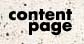
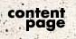

|
While Terrence Riley, Chief Curator of Architecture and
Design, declared that the MoMA plans to “reinvent the museum for
the next century,” a 240,000 pound, 55 by 13 foot, recently
acquired Richard Serra sculpture sat in a dark MoMA warehouse.
The question is who or what is really “reinventing the museum?”
MoMA director Glenn Lowry all but spelled it out when he stated
that “As the emphasis on the activity shifts, the character of
the organization changes....Museums that wish to engage with
contemporary artists must therefore constantly seek to create
spaces that can support rapidly changing notions of art.” It
appears then that Serra is the “reinventor,” that large-scale
works such as his mammoth Intersection II are dictating
architectural expansion. But according to what logic do art and
architecture begin formally responding to one another? Is there
not some invisible force that prompts this material tug-of-war?
Space seems to be at the root of all this, for both the
museum's art and architecture occupy the same institutional
space: the former being placed within that space, the latter
structurally and ideologically defining it. By using space as a
medium, though, art since Minimalism is often created to
contaminate this space, to resist ontological reconfiguration by
breaking out of the self-enclosed frame of much modern art into
the room, the hall, the space that is the museum. By sometimes
overwhelming this space and forcing viewers to bodily experience
the work-environment, many works enjoy a sense of liberation,
albeit a false one. For the shattering of the modernist frame is
immediately greeted by the imposition of another frame, the ever-pliant frame of institutional architecture -- one that, as Lowry
said, must respond to changes in artistic practice. And this
logic, whereby liberation is met by domination, is the logic of late
capitalism, what Ernst Mandel has named our current, all-
pervasive economic phase.
Late capitalism colonizes every last vestige of traditional,
non-commodified space. And the Western corporate museum is
first and foremost an agent of late capitalism, functioning according to
its logic. What is reinventing the museum, then, is not Terrence
Riley or the MoMA trustees, nor is it Serra and his gargantuan
works, but rather the logic of late capitalism just as it does
every other Western institution, moving them according to its
ever-changing needs. Economic forces, then, prompt art and
architecture to vie for power. Within the museum this logic
motivates architecture to adjust itself to artistic subversion,
colonizing, containing, and disciplining it to conform to its
first-world outlook.
But what does all this mean? And where will it end? Will
the Museum of Modern Art continue to eat Manhattan as the artworks get bigger? Or
will it just create international branches á la Krens? If the
colonization of space as dictated by late capitalism is
recognized as a historical inevitability, and if it is historicized,
then maybe museum expansion might be seen not as an opportunity
to show more works simultaneously and more appropriately, but as
endangering artistic freedom of speech. Peter Bürger notes:
Art in bourgeois society lives off the
tension between the institutional framework
(releasing art from the demand that it
fulfill a social function) and the possible
political content of individual works. This
tension, however, is not stable but subject
to a historical dynamics that tends toward
its abolition.
|
|
 
